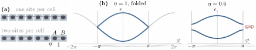
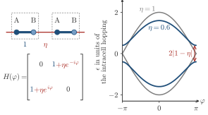
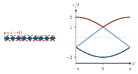

Page 6 of 11 of this session
2.7 Multi-orbital band structures
How do we get the bands of a lattice with several orbitals per cell? We will now see that the Fourier transform gives the Bloch Hamiltonian \(H(\varphi)\) of (2.12), a matrix of the size of the number of orbitals per cell. For the chain with alternating hoppings it gives the two bands of (2.13).
\[\Psi_\varphi^\dagger = \frac{1}{\sqrt L}\sum_n e^{in\varphi}\, c_n^\dagger, \qquad c_n^\dagger = \frac{1}{\sqrt L}\sum_\varphi e^{-in\varphi}\, \Psi_\varphi^\dagger, \tag{2.7}\]
This is the Fourier transform of Section 2.5 between the operators \(c_n^\dagger\) on the sites of a chain and the operators \(\Psi_\varphi^\dagger\) labelled by the Bloch phase \(\varphi\). The chain is closed into a ring of \(L\) sites, so that \(\varphi\) takes the \(L\) values \(2\pi m/L\), and at the end \(L\to\infty\). In this section each cell \(n\) has several orbitals, so we write the transform once for each orbital, with the operators \(c_{\varphi,\alpha}^\dagger\).
Real unit cells almost never have a single orbital. Graphene has two, one per sublattice, compounds of transition metals often have several \(d\)-orbitals per site, and so on. Let \(\alpha\) label the orbital within a unit cell and \(n\) label the unit cell itself. We keep couplings only within a cell and to the nearest-neighboring cell, and longer-range couplings work with the same method, only with more terms. The most general bilinear Hamiltonian built from these operators is then
\[H = \sum_{n,\alpha,\beta} t_{\alpha\beta}\, c_{n,\alpha}^\dagger c_{n,\beta} + \sum_{n,\alpha,\beta} \left(\gamma_{\alpha\beta}\, c_{n,\alpha}^\dagger c_{n+1,\beta} + \text{h.c.}\right), \tag{2.11}\]
where \(t_{\alpha\beta}\) are the intracell hoppings and \(\gamma_{\alpha\beta}\) are the intercell hoppings. The intracell term already contains both directions of each bond, so \(t\) is a Hermitian matrix, \(t_{\alpha\beta}=t_{\beta\alpha}^*\), and the Hermitian conjugate is only added to the intercell term.
The symmetry that splits (2.11) into blocks, one for each phase, is the translation by one cell, which shifts the unit-cell index \(n\to n+1\). It fixes the phase from one cell to the next, but not the combination of the orbitals within each cell, which is a unitary rotation among them. The corresponding eigenstates are
\[\Psi_{\varphi,\alpha}^\dagger \sim \sum_{n,\beta} e^{in\varphi}\,U_{\alpha\beta}\,c_{n,\beta}^\dagger,\]
for some unitary \(U\). We put this ansatz into (2.11) and repeat the Fourier argument of Section 2.5 for each orbital, and we find that the required \(U\) is the matrix that diagonalizes the Bloch Hamiltonian \(H(\varphi)\).
For a chain with several orbitals per cell, and with hoppings inside the cell and to the next cell only, the bands are the eigenvalues of the Bloch Hamiltonian
\[H(\varphi) = t + \gamma\, e^{i\varphi} + \gamma^\dagger e^{-i\varphi}, \tag{2.12}\]
which is a matrix whose size is the number of orbitals per unit cell. To write it we put each intracell hopping \(t_{\alpha\beta}\) in the entry of its pair of orbitals with no phase. Each intercell hopping \(\gamma_{\alpha\beta}\) goes in with the phase \(e^{i\varphi}\) and its conjugate with \(e^{-i\varphi}\), and then we diagonalize. A hopping \(\gamma_m\) to the cell at the distance \(m\) adds \(\gamma_m e^{im\varphi}\) and its Hermitian conjugate \(\gamma_m^\dagger e^{-im\varphi}\).
The steps From the Hamiltonian (2.11) to the Bloch Hamiltonian (2.12)
Let us take the simplest case first, one orbital per cell, where the matrices of (2.11) are numbers. For the chain (2.5), with \(t\) here the hopping of that chain, there is no intracell term and \(\gamma=-t\), so (2.12) gives \(-t\,e^{i\varphi}-t\,e^{-i\varphi}=-2t\cos\varphi\), which is (2.8).
With several orbitals we write the transform (2.7) once for each orbital \(\alpha\), which gives the operators \(c_{\varphi,\alpha}^\dagger=\frac{1}{\sqrt L}\sum_n e^{in\varphi}\,c_{n,\alpha}^\dagger\), with \(L\) the number of cells and no mixing of the orbitals. The intracell term \(t_{\alpha\beta}\,c_{n,\alpha}^\dagger c_{n,\beta}\) has both operators in the same cell \(n\). Their phases \(e^{-in\varphi}\) and \(e^{in\varphi'}\) cancel once the sum over \(n\) keeps only \(\varphi'=\varphi\), so this term gives \(t_{\alpha\beta}\,c_{\varphi,\alpha}^\dagger c_{\varphi,\beta}\) with no phase. The intercell term \(\gamma_{\alpha\beta}\,c_{n,\alpha}^\dagger c_{n+1,\beta}\) has its second operator in the next cell, which brings the extra phase \(e^{i\varphi}\), as for the chain of Section 2.5. Its Hermitian conjugate gives \(\gamma_{\alpha\beta}^*\,e^{-i\varphi}\,c_{\varphi,\beta}^\dagger c_{\varphi,\alpha}\), which is the entry \((\beta,\alpha)\) of \(\gamma^\dagger e^{-i\varphi}\). Together, with the same normalization as in (2.7),
\[H = \sum_\varphi\sum_{\alpha,\beta} c_{\varphi,\alpha}^\dagger\,\big[t + \gamma\,e^{i\varphi} + \gamma^\dagger e^{-i\varphi}\big]_{\alpha\beta}\,c_{\varphi,\beta},\]
meaning that different \(\varphi\) do not couple, and at each \(\varphi\) we diagonalize the matrix in the bracket, which is (2.12). The eigenstates \(\Psi_{\varphi,\alpha}^\dagger\) of the text above are these operators rotated by \(U(\varphi)\), whose rows are the eigenvectors of \(H(\varphi)\).
For the chain of (2.13) the orbitals are \(A\) and \(B\), in this order. The intracell hopping \(1\) couples \(A\) and \(B\) in the same cell. The intercell hopping \(\eta\) goes from \(B\) of the cell \(n\) to \(A\) of the cell \(n+1\), which is the term \(\eta\,c_{n,B}^\dagger c_{n+1,A}\), so \(\gamma_{BA}=\eta\) is the only entry of \(\gamma\) that is not zero,
\[t = \begin{pmatrix} 0 & 1 \\ 1 & 0 \end{pmatrix}, \qquad \gamma = \begin{pmatrix} 0 & 0 \\ \eta & 0 \end{pmatrix}, \qquad \gamma^\dagger = \begin{pmatrix} 0 & \eta \\ 0 & 0 \end{pmatrix}.\]
The entry \((A,B)\) of (2.12) is then \(1+\eta\,e^{-i\varphi}\), from \(t\) and from \(\gamma^\dagger e^{-i\varphi}\), and the entry \((B,A)\) is \(1+\eta\,e^{i\varphi}\), which is (2.13). The matrix has zero trace and the determinant \(-|1+\eta\,e^{-i\varphi}|^2\), so its two eigenvalues are \(\pm|1+\eta\,e^{-i\varphi}|\). In pyqula h.intra is \(t\) and h.inter is \(\gamma\), so geometry.bichain() with h.inter = eta*h.inter gives this matrix entry by entry.
Each entry of \(H(\varphi)\) is labelled by the pair of orbitals \((\alpha,\beta)\) that it couples. The intracell hoppings \(t_{\alpha\beta}\) enter this entry directly, with no phase, while the intercell hoppings \(\gamma_{\alpha\beta}\) enter multiplied by the phase \(e^{\pm i\varphi}\) that comes from the symmetry eigenvalue. This is the general method that we will use many times. First we count the orbitals per cell, which gives the size of the matrix. Then we put each hopping in the entry of its pair of orbitals, we multiply the intercell ones by \(e^{\pm i\varphi}\), and we diagonalize. Note that an intracell hopping between different orbitals goes off the diagonal, as the example below shows.
A concrete example makes this clear, and it comes back in Session 3. We take a chain with two orbitals per cell, which we call \(A,B\). The intracell coupling between \(A\) and \(B\) is strong, of magnitude \(1\), and the intercell coupling \(\eta\) between \(B\) in one cell and \(A\) in the next cell is weaker. The Bloch Hamiltonian (2.12) is then purely off-diagonal,
\[H(\varphi) = \begin{pmatrix} 0 & 1+\eta\,e^{-i\varphi} \\ 1+\eta\,e^{i\varphi} & 0 \end{pmatrix}, \qquad \epsilon_\pm(\varphi) = \pm\left|1+\eta\,e^{-i\varphi}\right|. \tag{2.13}\]
This chain with alternating hoppings is the Su-Schrieffer-Heeger (SSH) chain, and it appears again in Section 3.9, where it becomes a topological insulator. Figure 2.3 shows it as the chain of (2.8) described with a unit cell of two sites. Its single band folds into the two bands of (2.13), and a gap opens at the zone edge when \(\eta\) moves away from \(1\).


g2_ssh_bands.py
A chain has two sites \(A\) and \(B\) per cell. The hopping inside the cell is \(1\). The hopping from \(B\) to \(A\) of the next cell is \(\eta\). Its Bloch Hamiltonian has the form
\[H(\varphi) = t + \gamma\,e^{i\varphi} + \gamma^\dagger e^{-i\varphi}.\]
Here \(t\) holds the hoppings inside the cell, and \(\gamma\) those to the next cell. Which matrix is \(H(\varphi)\)?
Show the answers
- A. ✗ False
This is false. This matrix has \(\eta\) between equal sites of neighboring cells, \(A\) to \(A\) and \(B\) to \(B\). For \(\eta=1\) our chain is the uniform chain, and at \(\varphi=\pi\) its two folded bands touch at \(0\). This matrix gives \(-3\) and \(-1\) there.
- B. ✗ False
This is false. Here the phase sits on the hopping \(1\), so this is the chain with \(\eta\) inside the cell and \(1\) between cells. Session 3 uses this form, where the hopping inside the cell is the variable one and the phase has the opposite sign. Take \(\eta=0\). Our chain then has no hopping between cells, so its \(H(\varphi)\) has no \(\varphi\), while this matrix still has \(e^{-i\varphi}\). The bands are the same, since \(|\eta+e^{-i\varphi}|=|1+\eta e^{-i\varphi}|\), and only the eigenvectors differ. For \(\eta<1\) this difference changes the Zak phase of Session 3 from \(0\) to \(\pi\).
- C. ✓ True
This is true. The hopping \(1\) inside the cell enters the entry \((A,B)\) with no phase. The hopping \(\eta\) from \(B\) to the next \(A\) is \(\gamma_{BA}\), so it enters the entry \((B,A)\) with \(e^{i\varphi}\), and its conjugate enters the entry \((A,B)\) with \(e^{-i\varphi}\).
An intracell hopping enters \(H(\varphi)\) with no phase, and an intercell hopping with \(e^{\pm i\varphi}\).
A chain has the hopping \(1\) inside the cell and \(\eta\) between cells. Its two bands are
\[\epsilon_\pm(\varphi) = \pm\left|1+\eta\,e^{-i\varphi}\right|.\]
We take \(\eta=1\) and \(\varphi=\pi\). What is the energy of the two bands?
Show the answers
- A. ✓ True
This is true. At \(\varphi=\pi\) the phase factor is \(-1\), so \(1+\eta e^{-i\pi}=1-\eta\), which vanishes for \(\eta=1\). The two bands touch, as the folded band of the uniform chain does at the zone edge.
- B. ✗ False
This is false. The value \(\pm 2\) is \(\pm|1+\eta|\) at \(\varphi=0\) for \(\eta=1\), which is the top and the bottom of the two bands. At \(\varphi=\pi\) we get \(|1-1|=0\).
- C. ✗ False
This is false. The gap at \(\varphi=\pi\) is \(2|1-\eta|\). It is \(1\) for \(\eta=0.5\), but it is exactly zero for \(\eta=1\), so the gap closes.
The gap at \(\varphi=\pi\) is \(2|1-\eta|\), so it closes only when the two hoppings are equal.
We describe the uniform chain with a unit cell of three sites. How many bands do we get, and how wide is the zone?
Show the answers
- A. ✓ True
This is true. The Bloch Hamiltonian is a \(3\times 3\) matrix, so we get three bands. The cell is three times longer, so the zone is three times narrower, and the single band of (2.8) folds into it.

The chain with a cell of three sites. The three eigenvalues of the \(3\times3\) Bloch Hamiltonian, computed with pyqula, are the branches \(-2t\cos[(\varphi+2\pi m)/3]\) with \(m=0,1,2\), drawn for \(t=1\), where \(\varphi\) is the phase per cell of three sites. At \(\varphi=0\) they are \(-2t\), \(t\) and \(t\). \[H = -t\sum_\varphi \left(e^{i\varphi}+e^{-i\varphi}\right)\Psi_\varphi^\dagger\Psi_\varphi = \sum_\varphi \epsilon_\varphi\, \Psi_\varphi^\dagger\Psi_\varphi, \qquad \boxed{\epsilon_\varphi = -2t\cos\varphi}. \tag{2.8}\]
- B. ✗ False
This is false. At \(\varphi=0\) the folded energies \(-2t\cos(2\pi m/3)\) with \(m=0,1,2\) are \(-2t\), \(t\) and \(t\). A \(3\times 3\) matrix has three eigenvalues at each \(\varphi\), so one band is not enough.
- C. ✗ False
This is false. The zone has the width \(2\pi/(3a)\), which is smaller than \(2\pi/a\). A wider zone would need a shorter cell, and our cell is three times longer.
Counting the sites of the cell gives the number of bands, and its length gives the width of the zone.
A chain has two sites \(A\) and \(B\) per cell and the same hopping \(-t\) on every bond. The onsite energy is \(+\Delta\) on \(A\) and \(-\Delta\) on \(B\). Write its Bloch Hamiltonian \(H(\varphi)\), find its two bands, and find the gap at \(\varphi=\pi\).
Solution
The cell has two orbitals, so \(H(\varphi)\) is a \(2\times2\) matrix, and the onsite energies go on its diagonal. The bond inside the cell gives \(-t\) in the entry \((A,B)\) with no phase. The bond from \(B\) to \(A\) of the next cell is \(\gamma_{BA}=-t\), which enters the entry \((A,B)\) as \(-t\,e^{-i\varphi}\), as in (2.13). So
\[H(\varphi) = \begin{pmatrix} \Delta & -t\left(1+e^{-i\varphi}\right) \\ -t\left(1+e^{i\varphi}\right) & -\Delta \end{pmatrix}.\]
The matrix has zero trace, so its eigenvalues are \(\pm\sqrt{-\det H(\varphi)}\). With \(|1+e^{-i\varphi}|^2 = 2+2\cos\varphi\) this gives
\[\epsilon_\pm(\varphi) = \pm\sqrt{\Delta^2 + 2t^2\left(1+\cos\varphi\right)}.\]
At \(\varphi=\pi\) the hopping term vanishes and \(\epsilon_\pm=\pm|\Delta|\), so the gap is \(2|\Delta|\). At \(\varphi=0\) the bands are \(\pm\sqrt{\Delta^2+4t^2}\). For \(\Delta=0\) they are \(\pm2t|\cos(\varphi/2)|\), the band of the uniform chain folded into the zone of the cell of two sites, and they touch at \(\varphi=\pi\).
So a staggered onsite energy opens a gap \(2|\Delta|\) at the zone edge. For \(\Delta\neq0\), with one spinless electron per cell, which is half filling, the lower band is full and the chain is an insulator. In Session 3 a staggered potential of the same kind opens the gap of the honeycomb lattice at its Dirac points.
Notebook check-in: session2.ipynb, “One dimensional chain, band folding” (Challenge), and “One dimensional ladder, band folding” (Challenge)
The “band folding” section builds the same picture from the other direction. You take a chain with a single orbital and describe it again with a larger unit cell, with more than one site per cell. You see how the single band of (2.8) folds into several bands, as (2.12) predicts. The ladder section then works with a real model with two orbitals per cell, in the same spirit as (2.13). For the ladder with one cell, NS=1 in the first column of the plots, you can check that the numerical bands are \(2\cos\varphi\pm1\), with the hopping \(+1\) of the notebook. These are not the bands \(\epsilon_\pm(\varphi)\) of (2.13), and the reason is the bond to the next cell. In the ladder each site hops to its own copy in the next cell, while in (2.13) the site \(B\) hops to the site \(A\) of the next cell.
Try it. Change g.get_supercell(2) to three and to four sites. Count the bands, and check that their number equals the number of sites in the cell, with each band spanning a smaller zone.